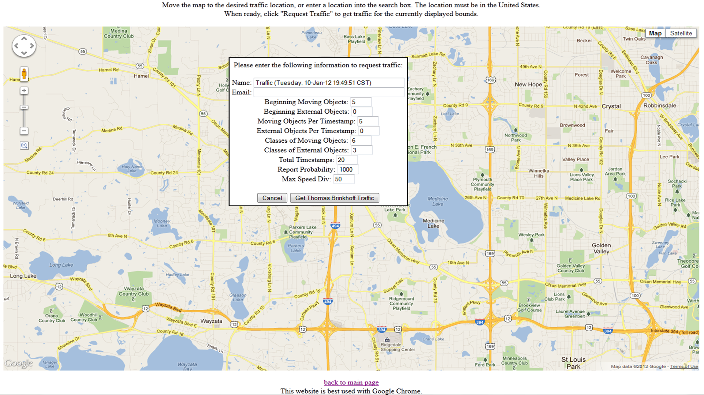
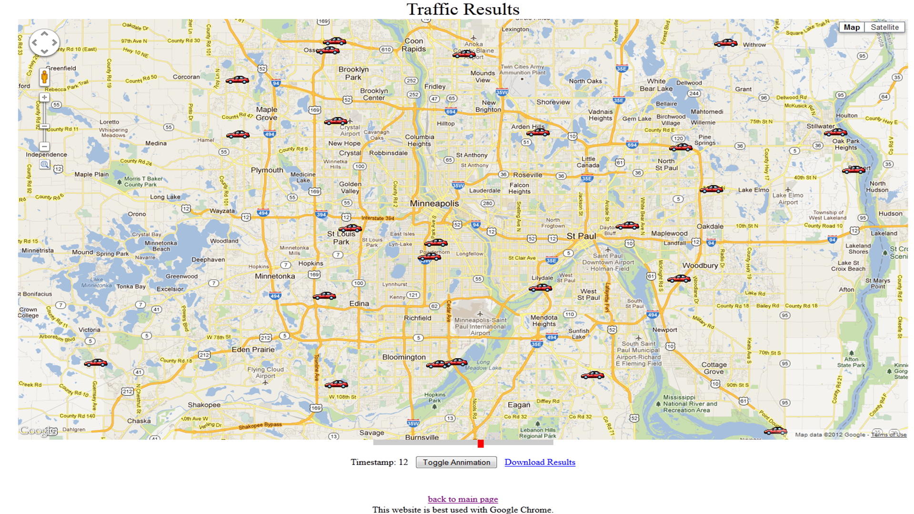

MinnesotaTG: Web-based U.S. Road Traffic Generator
MinnesotaTG: Web-based U.S. Road Traffic Generator
Project Overview
MinnesotaTG is a project developed at the University of Minnesota. MinnesotaTG is built based on two existing traffic generators: (1) BerlinMod and (2) Thomas-Brinkhoff. The purpose of MinnesotaTG is to take an arbitrary region in the United States and generate traffic data from that region. Without this tool, generating this traffic is a complicated and drawn out process because of the number of configuration steps necessary to get either Thomas-Brinkhoff or BerlinMod both up and running, and able to work on a user specified region. The generation of the traffic is not done by the tool itself, but rather it is performed by these two different traffic generators.How to Get?
To generate traffic using TwisGen, you don't need to download, build, or run code. All you have to do is to access the web interface provided in the following link: MinnesotaTG: Web-based U.S. Road Traffic GeneratorFor more information about the web interface, please continue reading the following description
What are the Input Parameters ?
The primary input to the traffic generator is the bounds of the region that traffic should be generated for. Thomas-Brinkhoff and BerlinMod each have their own input parameters that they use as well. Thomas-Brinkhoff uses parameters that deal with the number of moving objects that should be started with, and then the number that should be added at each time stamp. It also allows to for specifying the amount of distance a moving object is allowed to travel between each timestamp. Finally, the total number of timestamps can be specified as well. BerlinMod unifies all of the properties into a single scale factor which all of the other properties derive from. Some of the other properties include number of cars and the number of days to simulate. BerlinMod has both a region and network based generation, but for the purposes of the traffic generator tool, only the network based generation is used.
How is the Traffic Generated ?
Shape files are provided by the U.S. government for the more than 3,500 counties in the 50 states. Both of the traffic generators have a relatively easy time generating data on a particular shape file (after it has been converted to their respective formats). However, when the region specified by a user spans multiple counties and county fragments, the generation becomes much more complicated.What is the Output ?
The output from the traffic generator is a visualization of the moving cars using Google Maps v3 API's with their HTML overlay feature drawing the cars themselves at specific pixels of the map. It is also possible to download the results of the traffic data in a format which is the same for the two generators, including object ids, timestamps, latitude, and longitude coordinates. The results for both of the generators are stored in the unified format mentioned above inside a MySQL database. Traffic visualization is done using Google Maps v3 API for displaying overlays in HTML. The data is loaded via ajax into the web page which then creates an overlay for each time stamp of the traffic results. Overlays are a Google map concept and can consist of many different types of data. In this case, document fragments are created for each object (car) at a time stamp, which is then added to the overlay for that time stamp. When the data is being animated, it simply consists of displaying the corresponding overlay to the time stamp and hiding the remaining overlays. Overlays are used instead of traditional markers because of the speed at which they can be loaded in comparison to the maps built-in markers.